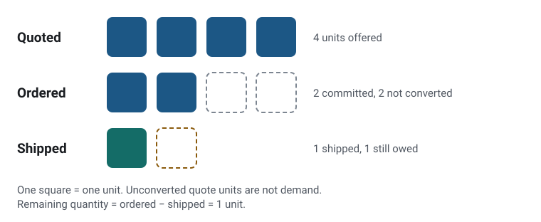
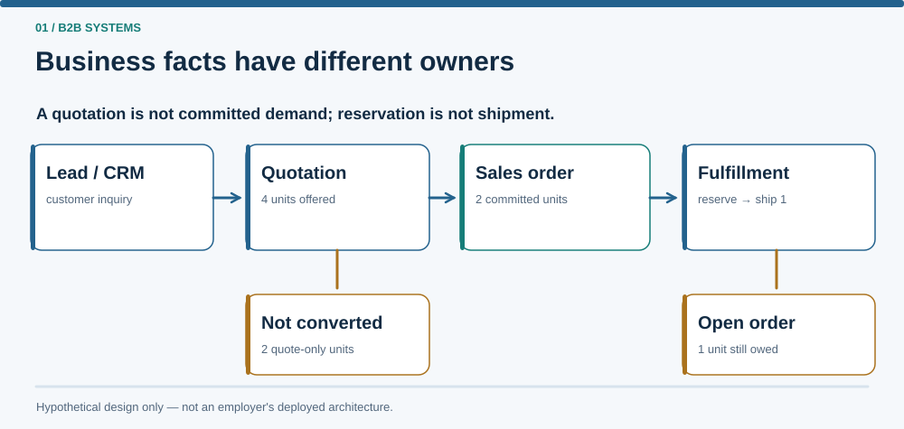

The situation
One customer request can show up three times: as a quote for 4 units, an order for 2 and a shipment of 1. Add them up and a report shows far more demand than anyone committed to.
This case study designs, on paper, how a small fictional distributor could keep those facts apart, and checks its own numbers with small scripts.
Where this comes from
I collaborate with a software lead in a two-person team on an industrial B2B platform used by staff and dealers, contributing business context, requirements clarification, reviews and AI-assisted development direction for sales and operational workflows.
Three decisions that shape it
-
Give every fact one owner.
Quotes belong to Quotation, orders and their status to Orders, and stock and shipments to Inventory and Fulfillment. Other modules can read a fact but not edit it, so an order can’t be “closed” in one place and “partly shipped” in another.
Modular monolith; Reporting reads everything and owns no source facts.

-
Count demand from accepted orders only.
Committed demand is the 2 units on the accepted order. The 4 quoted units are reported separately as a signal, and shipping changes what’s still owed, not demand. Each record keeps the ID of the one it came from, so demand and conversion numbers can be traced back to the records they came from.
Identifier lineage: order line → quote line → opportunity.
-
Reserve stock at the order, not the quote.
Many quotes never convert, so a quote doesn’t hold stock; only an accepted order can reserve it. The cost is written down too: a customer told “in stock” when quoting may find that only part of the order can ship right away.
Architecture decision record ADR-001; worth revisiting for scarce or made-to-order items.

The result
The scenario’s numbers reconcile: 4 quoted, 2 ordered, 1 shipped and 1 still owed, and committed demand stays at 2 even after the second unit ships in the walkthrough. A small calculator and a document checker confirm the arithmetic and that every identifier in the documents exists in the data.
Of 4 quoted units, 2 became demand and 1 has shipped

What I’d do next
Build a small prototype of the Orders and Inventory modules to test what the design leaves open, such as keeping reservations consistent when two orders arrive at once.
Technical notes
- Remaining quantity is derived (ordered − shipped) and never edited by hand; cancellations and returns are out of scope.
- Estimates, observed facts and missing values are tagged separately, and a missing arrival date is never treated as zero days.
- Five metric definitions each state their unit, population and denominator; win rate counts opportunities, while conversion counts units.
- Three short architecture decision records give the context, decision and consequences of each choice.
- Standard-library Python only: a scenario calculator, a document checker and 30 unit tests.
- One SKU, one warehouse and five invented cohort rows; the numbers illustrate arithmetic, not business performance.
Each business fact has one owning module

My role
I co-developed the original agent prompt kit for this project with AI assistance, and I provided the business context, project purpose and initial architecture outline. I set requirements, evaluation criteria, edge-case priorities and approval decisions.
I used a planner-and-builder AI workflow to produce the written artifacts, fictional scenario and checking scripts. AI tools produced those materials, while I remained responsible for the project's direction and final approvals. This contribution concerns the hypothetical case study, not an implementation of its proposed business platform.
During the first review round, I personally followed the project's run-and-check instructions in PowerShell and confirmed that the outputs matched the agents' reports. Later corrections and their regression results were verified by agents.
What I learned
I learned to separate quotations, commercial commitments, stock reservations and physical shipments, and to identify which responsibility owns each fact. The scenario also prompted questions about keeping reservation updates consistent when operations happen concurrently. Transactions and concurrency control are relevant implementation topics for a future prototype; this case study remains a conceptual design.
Academic connections
These are conceptual connections to the reasoning described in Applied Thinking. They do not claim formal implementation of every theory.